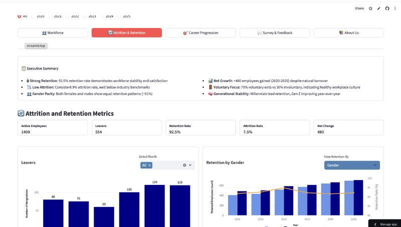

Projects
Regression Test Suite
Designed and maintained a comprehensive BDD test suite using Gherkin syntax for SaaS platform workflows. Improved coverage by identifying critical paths and edge cases, reducing post-release defects.
UAT Validation Framework
Owned last-mile testing and production validation for enterprise systems. Developed structured validation checklists and sign-off processes that ensured zero critical defects in production releases.
HR Analytics Dashboard Academic Project
An HR Analytics Dashboard developed as part of my master's program in Data Visualization. This project showcases the application of analytical and visual design techniques to present key workforce insights in an intuitive and data-driven format.
Open HR DashboardView on GitHub

Prompt Engineering for Automated QA Personal Project
Developed a Python script using OpenAI's API to automate the generation of negative test cases for a login form and their corresponding expected error messages using prompt chaining.
import openai
def generate_negative_test_cases(prompt):
response = openai.Completion.create(
engine="text-davinci-003",
prompt=prompt,
max_tokens=150
)
return response.choices[0].text.strip()
# Example usage
prompt = "Generate negative test cases for a login form and expected error messages."
print(generate_negative_test_cases(prompt))
This approach streamlines the creation of comprehensive test cases, improving QA efficiency and coverage.